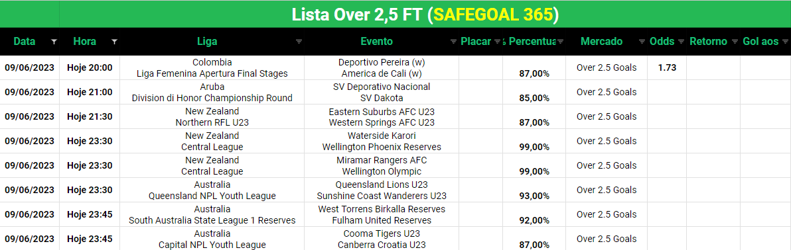
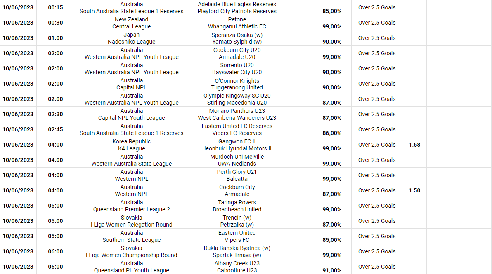
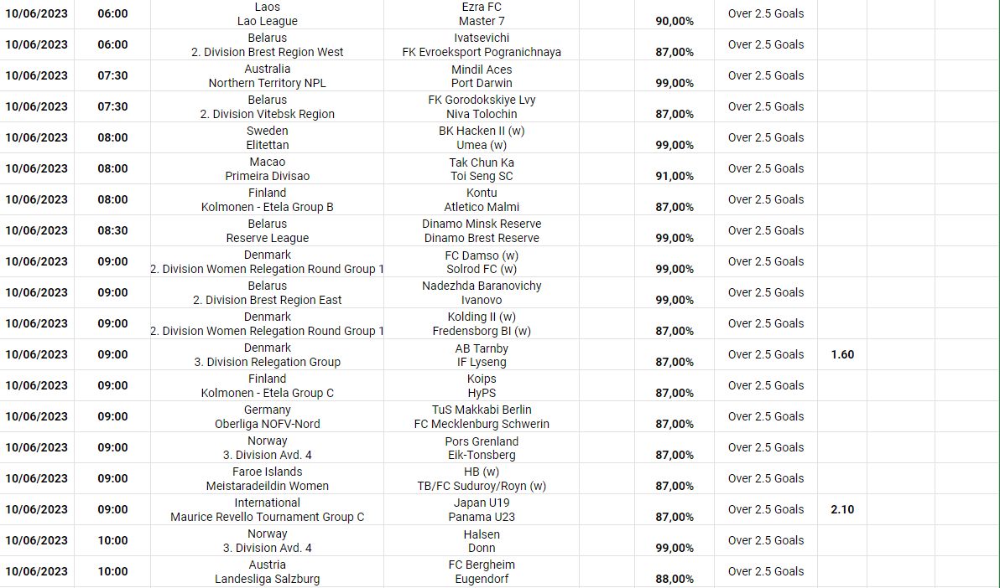
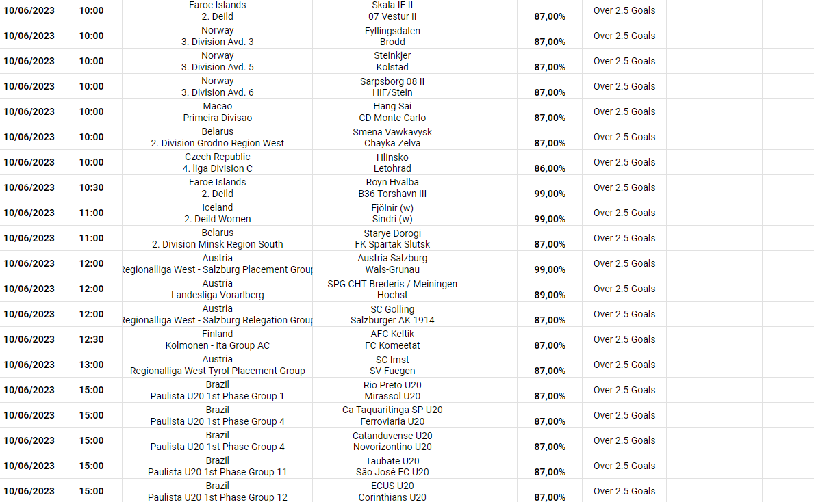

Over 2.5 Gols
Aqui estão as melhores oportunidades para Mais de 2.5 Gols do dia. Nosso bot utiliza informações precisas de confrontos diretos, confrontos na mesma liga, e perfomance atual para definir e filtrar os critérios que tornam a operação viável. Utilizem estas informações para o ao vivo se possível, aguardando a valorização da odd ou utilizem em triplas, duplas ou múltiplas



